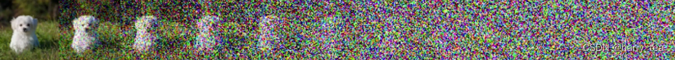

公式推导
如下图所示，给大家一个直观的认识：Diffusion Model分为前向过程和反向过程，前向过程将输入图$x_{0}$变为纯高斯噪声$x_{T}$，反向过程就是将噪声$x_{T}$还原为图片$x_{0}$的过程（就是一个不断去噪的过程）
前向推导
前向过程从$x_{t-1}$到$x_{t}$的公式
给定真实图片$x_0 \sim q(x)$，前向过程中diffusion model对其添加了$T$次高斯噪声，分别得到图$x_{0},x_{1},…,x_{T}$（随着$t$的增加，$x$包含越来越多的噪声），这个过程如下表示
下图展示了前向加噪的过程中图片的变化，从左到右为$x_{0},x_{1},…,x_{T}$

整个前向加噪过程是马尔科夫过程，即$t$时刻的状态只与$t-1$时刻有关，在不断加噪的过程中，$x_{t}$不断接近纯噪声，$T\rightarrow \infty$，$x_t$变为正态分布的高斯噪声，在论文中$ \beta_{t}$是从0.0001到0.02线性插值的，取$T=1000$，也就是说$\beta_{t}$是不断增加的，$1-\beta_{t}$是不断减小的。
回过头来再看上述分布$\mathcal{N}(x_{t};\sqrt{1-\beta_{t}}x_{t-1},\beta_{t}I)$，随着$t$增加，$x_{t}$的均值是$x_{t-1}$的$\sqrt{1-\beta_{t}}<1$倍，因此最终$x_t$的均值不断变小，趋近于0，而标准正态分布的均值也为0。
下面是$\beta_{t}$和$\sqrt{1-\beta_{T}}$随着$t$增加的变化曲线
从$x_0$到$x_t$
前向过程的$T$最多为1000次，如果每次都单独计算过于耗时，这里推导能够一步到位的方式。
为了推导方便，原论文令$\alpha_t = 1 - \beta_t$，$\overline{\alpha}_t = \prod_{i = 1}^{T} \alpha_i$，并用重参数化的方法来表示前向过程每一步的数据分布（重参数化方法在文未有介绍），这里我们由$q(x_t|x_{t - 1})$得：
其中公式的红色部分用到了高斯分布的独立可加性，即$\mathcal{N}(0, \sigma_1^2 I) + \mathcal {N}(0, \sigma_2^2 I) \sim \mathcal{N}(0, (\sigma_1^2 + \sigma_2^2)I)$。
由可得
$x_t$的最终结果为$x_t = \sqrt{\overline{\alpha}_t}x_0 + \sqrt{1 - \overline{\alpha}_t}\widetilde{z}_t$，其中$\overline{\alpha}_t = \prod_{i = 1}^{T} \alpha_i$在$T$次连乘之后接近于0，即$x_t = 0 \times x_0 + \sqrt{1 - 0}\widetilde{z}_t = \widetilde{z}_t$，即$\mathcal{N}(0, I)$的正态分布，这就是整个前向推导了。
关于$x_{t - 1}$到$x_t$的一个疑问
为什么$x_t$的分布是$q(x_t|x_{t - 1}) = \mathcal{N}(x_t; \sqrt{1 - \beta_t}x_{t - 1}, \beta_t I)$呢？因为这个公式是作者直接给出的，并没有一个推导，公式表明在加噪的过程中均值要乘上$\sqrt{1 - \beta_t}$，如果要保证均值最后为0的话，只需要每次乘的值小于1就可以了（虽然方差可能并不是$I$），通过上述推导我们可以发现$x_t$的最终等于$\sqrt{\overline{\alpha}_t}x_0 + \sqrt{1 - \overline{\alpha}_t}\widetilde{z}_t$，即$T \to \infty$，$x_t \sim \mathcal{N}(0, I)$，也就是说$\mathcal{N}(x_t; \sqrt{1 - \beta_t}x_{t - 1}, \beta_t I)$这个分布能够保证$x_t$最终收敛为标准高斯分布，但是具体前向分布这个式子怎么得到的，我不是很懂。
反向推导
已知$x_t$，预测$x_{t-1}$
在前向加噪过程中，表达式为$q(x_t|x_{t - 1}) = \mathcal{N}(x_t; \sqrt{1 - \beta_t}x_{t - 1}, \beta_t I)$，反向过程就是将上述过程进行逆转，得到$q(x_{t - 1}|x_t)$的分布，通过不断的去噪从$x_T \sim \mathcal{N}(0, I)$中还原出原图$x_0$，文中证明了如果$q(x_t|x_{t - 1})$满足高斯分布并且$\beta_t$足够小，$q(x_{t - 1}|x_t)$仍然是一个高斯分布。但是我们无法简单推断$q(x_{t - 1}|x_t)$，因此我们使用深度学习模型（参数为$\theta$，结构一般为U-net + attention结构）来预测他的真实分布：
(3)式是我们要通过神经网络预测diffusion model反向过程的式子：已知$x_t$以及加噪次数$t$的情况下，推导$x_{t - 1}$，这个过程十分复杂，因为我们有无数的去噪可能性，即使最终得到了$x_0$，也无法确定$x_0$是否真的属于$q(x)$这个分布中的数据，因此需要对去噪过程加以限制，即让其去噪后的图片收敛到$q(x)$分布中。
额外已知$x_0$的情况下的反向过程
对于反向过程的分布$q(x_{t - 1}|x_t)$我们无法预测，但是从前向过程中我们知道$x_0$，所以通过贝叶斯公式得到$q(x_{t - 1}|x_t, x_0)$为：
推导过程如下，首先利用贝叶斯公式将反向过程均变为前向过程$x_{t - 1} \to x_t$，$x_0 \to x_{t - 1}$以及$x_0 \to x_t$：
根据高斯分布的概率密度函数的指数部分$(\mu, \sigma^2) \propto \exp(-\frac{(x - \mu)^2}{2\sigma^2})$以及前向推导公式$x_t = \sqrt{\alpha_t}x_{t - 1} + \sqrt{1 - \alpha_t}z_1$和$x_t = \sqrt{\overline{\alpha}_t}x_0 + \sqrt{1 - \overline{\alpha}_t}\widetilde{z}_t$得：
根据$\exp(-\frac{(x - \mu)^2}{2\sigma^2}) = \exp(-\frac{1}{2}(\frac{1}{\sigma^2}x^2 - \frac{2\mu}{\sigma^2}x + \frac{\mu^2}{\sigma^2}))$，对于大括号中的部分进行化简能够得到$q(x_{t - 1}|x_t, x_0)$的均值和方差，如下：
化简得：
由$x_t = \sqrt{\overline{\alpha}_t}x_0 + \sqrt{1 - \overline{\alpha}_t}\widetilde{z}_t$，得$x_0 = \frac{1}{\sqrt{\overline{\alpha}_t}}(x_t - \sqrt{1 - \overline{\alpha}_t}\widetilde{z}_t)$并替换上面均值中的$x_0$得到：
这样我们证明最初已知$x_0$后的反向表达式了，即：
观察发现$\alpha_t$，$\beta_t$，$\overline{\alpha}_t$，$\overline{\alpha}_{t - 1}$都是已知的，要想由$x_t$得到$x_{t - 1}$未知的只有$\widetilde{z}_t$，这也是为什么在反向过程中我们要通过神经网络来预测噪声的原因，预测成功之后我们就可以得到$q(x_{t - 1}|x_t, x_0)$的分布了，然后利用重参数技巧来得到$x_{t-1}$。
回到第一步的理想目标
通过上述推导发现要得到$x_{t - 1}$，反向过程的目的就是预测前向过程每一次加入的噪声，因此这里的高斯分布$\widetilde{z}_t$是深度学习模型所预测的噪声（即重参数化时从标准高斯分布中采样的噪声），可以看做$z_{\theta}(x_t, t)$，由此得到均值为：
网络的最终目的就是预测$z_{\theta}(x_t, t)$，或者说是均值$\mu_{\theta}(x_t, t)$，至于方差$\Sigma_{\theta}(x_t, t)$从推导来看它是一个固定值，论文中也提到当做固定值效果更好。
最大似然->最小KL散度推导
- 从数据分布中采样：
- Sample $\{x^{1},x^{2},\ldots,x^{m}\} from P_{data}(x)$
- 求最优参数$\theta^{*}$的推导过程：
- $\theta^{*}=\arg\max_{\theta}\prod_{i = 1}^{m}P_{\theta}(x^{i})=\arg\max_{\theta}\log\prod_{i = 1}^{m}P_{\theta}(x^{i})$
- $=\arg\max_{\theta}\sum_{i = 1}^{m}\log P_{\theta}(x^{i})\approx\arg\max_{\theta}E_{x\sim P_{data}}[\log P_{\theta}(x)]$
- $=\arg\max_{\theta}\int_{x}P_{data}(x)\log P_{\theta}(x)dx-\int_{x}P_{data}(x)\log P_{data}(x)dx$
- $=\arg\max_{\theta}\int_{x}P_{data}(x)\log\frac{P_{\theta}(x)}{P_{data}(x)}dx=\arg\min_{\theta}KL(P_{data}||P_{\theta})$
公式推导解释
- 第一步到第二步：
- 对$\prod_{i = 1}^{m}P_{\theta}(x^{i})$取对数，这是因为对数函数是单调递增函数，所以$\arg\max_{\theta}\prod_{i = 1}^{m}P_{\theta}(x^{i})$和$\arg\max_{\theta}\log\prod_{i = 1}^{m}P_{\theta}(x^{i})$的解是相同的。同时，根据对数的运算法则$\log(ab)=\log a+\log b$，$\log\prod_{i = 1}^{m}P_{\theta}(x^{i})=\sum_{i = 1}^{m}\log P_{\theta}(x^{i})$ 。
- 第二步到第三步：
- 这里使用了大数定律的思想。$\sum_{i = 1}^{m}\log P_{\theta}(x^{i})$是从数据分布$P_{data}(x)$中采样的$m$个样本的$\log P_{\theta}(x)$的和。当$m$足够大时，$\frac{1}{m}\sum_{i = 1}^{m}\log P_{\theta}(x^{i})$近似等于期望$E_{x\sim P_{data}}[\log P_{\theta}(x)]$，所以$\arg\max_{\theta}\sum_{i = 1}^{m}\log P_{\theta}(x^{i})\approx\arg\max_{\theta}E_{x\sim P_{data}}[\log P_{\theta}(x)]$。
- 第三步到第四步：
- 根据期望的定义，对于连续型随机变量，$E_{x\sim P_{data}}[\log P_{\theta}(x)]=\int_{x}P_{data}(x)\log P_{\theta}(x)dx$ 。而$\int_{x}P_{data}(x)\log P_{data}(x)dx$与$\theta$无关，在求$\arg\max_{\theta}$时可以减去这一项，不影响$\theta$的最优解。
- 第四步到第五步：
- 利用对数运算法则$\log\frac{a}{b}=\log a - \log b$，将$\int_{x}P_{data}(x)\log P_{\theta}(x)dx-\int_{x}P_{data}(x)\log P_{data}(x)dx$变形为$\int_{x}P_{data}(x)\log\frac{P_{\theta}(x)}{P_{data}(x)}dx$。这里$\int_{x}P_{data}(x)\log\frac{P_{\theta}(x)}{P_{data}(x)}dx$ 是$P_{data}(x)$和$P_{\theta}(x)$之间的Kullback - Leibler（KL）散度的相反数，即$KL(P_{data}||P_{\theta})=\int_{x}P_{data}(x)\log\frac{P_{data}(x)}{P_{\theta}(x)}dx=-\int_{x}P_{data}(x)\log\frac{P_{\theta}(x)}{P_{data}(x)}dx$，所以$\arg\max_{\theta}\int_{x}P_{data}(x)\log\frac{P_{\theta}(x)}{P_{data}(x)}dx=\arg\min_{\theta}KL(P_{data}||P_{\theta})$。
整个推导过程的核心是通过数学变换将从数据分布中学习参数$\theta$的问题转化为最小化数据分布$P_{data}(x)$和模型分布$P_{\theta}(x)$之间的KL散度的问题 。
VAE: Lower bound of logP(x)
DDPM: Compute $P_{\theta}(x)$
首先计算$logp(x)$的下界，计算过程与VAE类似。
疑问
为什么如果$q(x_t|x_{t - 1})$满足高斯分布并且$\beta_t$足够小，$q(x_{t - 1}|x_t)$仍然是一个高斯分布
扩散模型的反向过程 $ q(x_{t-1} \mid x_t) $ 在大多数情况下被建模为高斯分布，这一设计基于以下原因：
正向过程的高斯特性
正向过程通过逐步添加高斯噪声将数据破坏为纯噪声，其定义为：
其中 $\beta_t$ 是噪声调度参数。每一步的噪声均为高斯分布，且当 $\beta_t$ 足够小时，正向过程可视为连续扩散的离散近似
反向过程的推导与近似
反向过程的目标是从噪声中恢复数据。理论上，反向条件分布 $q(x_{t-1} \mid x_t) $ 可通过贝叶斯公式与正向过程关联：
然而，直接计算需已知数据分布 $ q(x_{t-1}) $，这在实践中不可行。因此，扩散模型通过两个关键假设简化问题：
假设1：马尔可夫性
正向和反向过程均为马尔可夫链，使得 $ q(x_{t-1} \mid x_t) $ 仅依赖当前状态 $ x_t $，而非全部历史。
假设2：小噪声近似
当正向过程的噪声步长 $\beta_t$ 足够小时，反向过程的每一步可近似为高斯分布。这一结论源于随机微分方程（SDE）的对应理论：正向扩散的逆过程（反向SDE）在连续极限下同样是扩散过程，其条件分布趋于高斯
DDPM中的具体实现
在去噪扩散概率模型（DDPM）中，反向过程被显式建模为高斯分布：
其中均值 $\mu_\theta$ 由神经网络预测，方差 $\Sigma_\theta$ 通常固定为与 $\beta_t$ 相关的值（如 $\sigma_t^2 I$）。这一选择基于以下观察：
条件分布的闭式解：若已知初始数据分布 $ q(x_0) $，则反向条件分布 $ q(x_{t-1} \mid x_t, x_0) $ 可解析推导为高斯分布：
其中 $\tilde{\mu}$ 和 $\tilde{\beta}_t$ 为与正向噪声参数相关的闭式表达式。
去噪目标：神经网络通过预测噪声（或直接预测均值）来逼近这一闭式解，从而间接拟合反向过程的高斯分布。
反向过程的条件分布 $ q(x_{t-1} \mid x_t) $ 并非严格高斯，但在以下条件下可被合理近似为高斯分布：
- 正向过程为小步长的高斯扩散；
- 反向过程通过参数化（如神经网络）显式约束为高斯形式；
- 目标是通过逐步去噪生成数据，而非精确建模真实反向分布。
因此，扩散模型通过高斯假设简化了反向过程的建模，使得训练和采样可通过高效的神经网络实现，同时保持了理论合理性与生成质量。